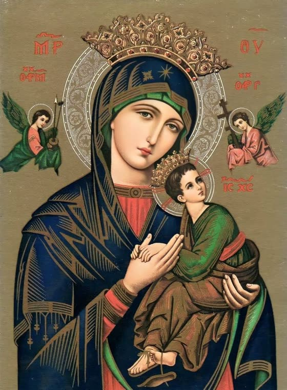

Para pedir por la vida de los niños por nacer y de las madres en situación vulnerable.
Señor de la vida,
Tú que formaste mi ser en el seno materno,
te pido que protejas a cada niño por nacer.
Dales fuerza a sus madres para acogerlos con amor,
y fe a sus padres para guiarlos en tu camino.
Que cada vida sea vista como un regalo,
un reflejo de tu amor y tu voluntad.
Cuida a los más pequeños e indefensos,
y despierta en todos el respeto por la vida.
María, Madre de la Vida,
intercede por cada niño aún no nacido,
para que puedan ver la luz del día
y crecer bajo la bendición de Dios.
Amén.
Se reza siguiendo el esquema común de cualquier rosario; la diferencia está en que existe una intención particular para añadir a cada Misterio de tu Rosario diario.
Por la señal de la santa Cruz, de nuestros enemigos, líbranos, Señor, Dios nuestro. En el nombre del Padre y del Hijo y del Espíritu Santo.
Yo confieso ante Dios Todopoderoso, y ante ustedes hermanos que he pecado mucho de pensamiento, palabra, obra y omisión. Por mi culpa, por mi culpa, por mi gran culpa. Por eso ruego a Santa María siempre Virgen, a los ángeles, a los santos y a ustedes hermanos, que intercedan por mí ante Dios, Nuestro Señor. Amén.
Gloria al Padre y al Hijo y al Espíritu Santo. Como era en el principio, ahora y siempre, por los siglos de los siglos. Amén.
Para cada Misterio: se pronuncia el misterio según el día y se lee la intención correspondiente de la lista de arriba. Tomá un minuto para reflexionar, relacionala con la realidad y dialogá sobre ello con Jesús y con María. Después:
Un Padre NuestroPadre Nuestro, que estás en el Cielo, santificado sea Tu nombre, venga a nosotros Tu reino, hágase tu voluntad, en la tierra como en el cielo. Danos hoy nuestro pan de cada día, perdona nuestras ofensas, como también nosotros perdonamos a los que nos ofenden. No nos dejes caer en la tentación, y líbranos del mal. Amén.
10 AvemaríasDios te Salve, María, llena eres de gracia, el Señor es contigo. Bendita tú eres entre todas las mujeres y bendito es el fruto de tu vientre, Jesús. Santa María, Madre de Dios, ruega por nosotros pecadores, ahora y en la hora de nuestra muerte. Amén. (Se repite 10 veces).
Un Gloria al PadreGloria al Padre y al Hijo y al Espíritu Santo. Como era en el principio ahora y siempre, por los siglos de los siglos. Amén.
JaculatoriaSanta María de Guadalupe, Madre del verdadero Dios por quien se vive, ruega por los concebidos no nacidos.
Repetí este mismo esquema para los cinco Misterios, cambiando la intención según la lista de arriba.
Dios te salve, María Santísima, Hija de Dios Padre, Virgen Purísima antes del parto, en tus manos ponemos nuestra fe para que la ilumines. Llena eres de gracia, el Señor está contigo. Bendita tú eres entre todas las mujeres y bendito es el fruto de tu vientre, Jesús. Santa María, Madre de Dios, ruega por nosotros pecadores, ahora y en la hora de nuestra muerte. Amén.
Dios te salve, María Santísima, Madre de Dios Hijo, Virgen Purísima en el parto, en tus manos ponemos nuestra esperanza para que la alientes. Llena eres de gracia… Santa María, Madre de Dios, ruega por nosotros pecadores, ahora y en la hora de nuestra muerte. Amén.
Dios te salve, María Santísima, esposa de Dios Espíritu Santo, Virgen Purísima después del parto, en tus manos ponemos nuestra caridad para que la inflames. Llena eres de gracia… Santa María, Madre de Dios, ruega por nosotros pecadores, ahora y en la hora de nuestra muerte. Amén.
Dios te salve, María Santísima, Templo y Sagrario de la Santísima Trinidad, Virgen concebida sin la culpa original.
Dios te salve, Reina y Madre de misericordia, vida, dulzura y esperanza nuestra; Dios te salve. A ti llamamos los desterrados hijos de Eva; a ti suspiramos, gimiendo y llorando en este valle de lágrimas. Ea, pues, Señora, abogada nuestra, vuelve a nosotros esos tus ojos misericordiosos; y después de este destierro, muéstranos a Jesús, fruto bendito de tu vientre. ¡Oh, clemente, oh piadosa, oh dulce Virgen María! Ruega por nosotros, Santa Madre de Dios, para que seamos dignos de alcanzar las promesas de Nuestro Señor Jesucristo. Amén.
Para cerrar el Rosario se rezan las Letanías Lauretanas completas:
Señor, ten piedad.
Cristo, ten piedad.
Señor, ten piedad.
Cristo, óyenos.
Cristo, escúchanos.
Dios, Padre celestial, ten piedad de nosotros.
Dios, Hijo, Redentor del mundo,
Dios, Espíritu Santo,
Santísima Trinidad, un solo Dios,
Santa María, ruega por nosotros.
Santa Madre de Dios,
Santa Virgen de las Vírgenes,
Madre de Cristo,
Madre de la Iglesia,
Madre de la misericordia,
Madre de la divina gracia,
Madre de la esperanza,
Madre purísima,
Madre castísima,
Madre siempre virgen,
Madre inmaculada,
Madre amable,
Madre admirable,
Madre del buen consejo,
Madre del Creador,
Madre del Salvador,
Virgen prudentísima,
Virgen digna de veneración,
Virgen digna de alabanza,
Virgen poderosa,
Virgen clemente,
Virgen fiel,
Espejo de justicia,
Trono de la sabiduría,
Causa de nuestra alegría,
Vaso espiritual,
Vaso digno de honor,
Vaso de insigne devoción,
Rosa mística,
Torre de David,
Torre de marfil,
Casa de oro,
Arca de la Alianza,
Puerta del cielo,
Estrella de la mañana,
Salud de los enfermos,
Refugio de los pecadores,
Consuelo de los migrantes,
Consoladora de los afligidos,
Auxilio de los cristianos,
Reina de los Ángeles,
Reina de los Patriarcas,
Reina de los Profetas,
Reina de los Apóstoles,
Reina de los Mártires,
Reina de los Confesores,
Reina de las Vírgenes,
Reina de todos los Santos,
Reina concebida sin pecado original,
Reina asunta a los Cielos,
Reina del Santísimo Rosario,
Reina de la familia,
Reina de la paz.
Cordero de Dios, que quitas el pecado del mundo, perdónanos, Señor.
Cordero de Dios, que quitas el pecado del mundo, escúchanos, Señor.
Cordero de Dios, que quitas el pecado del mundo, ten misericordia de nosotros.
Ruega por nosotros, Santa Madre de Dios.
Para que seamos dignos de las promesas de Cristo.
Oración. Te rogamos nos concedas, Señor Dios nuestro, gozar de continua salud de alma y cuerpo, y por la gloriosa intercesión de la bienaventurada siempre Virgen María, vernos libres de las tristezas de la vida presente y disfrutar de las alegrías eternas. Por Cristo nuestro Señor. Amén.
Fuente: desdelafe.mx
